Ford Explorer 2020, wersja St, silnik 3L o mocy 400 KM, automatyczna skrzynia biegów, napęd na cztery koła (AWD), przebieg 98 810 km.
Auto pochodzi z rynku USA.
Wyposażenie :
* Silnik 3L o mocy 400 KM
* Napęd na cztery koła AWD
* Automatyczna skrzynia biegów
* 6 miejsc siedzących
* Skórzana tapicerka
* Elektrycznie regulowane fotele przednie z pamięcią ustawień
* Wentylowane i podgrzewane fotele przednie
* Podgrzewane tylne siedzenia
* Elektrycznie regulowana i podgrzewana kierownica wielofunkcyjna
* Trójstrefowa automatyczna klimatyzacja
* Panoramiczny dach szklany sterowany elektrycznie
* System kamer 360 stopni
* Adaptacyjny tempomat z funkcją Stop&Go
* Asystent pasa ruchu i aktywne utrzymanie pasa
* System monitorowania martwego pola
* Asystent jazdy w korku
* System rozpoznawania znaków drogowych
* System automatycznego hamowania awaryjnego
* Ostrzeganie o kolizji i pieszych
* System audio premium
* Nawigacja z ekranem dotykowym
* Android Auto, Bluetooth, ładowarka indukcyjna
* Keyless-Go, cyfrowy kluczyk
* Elektrycznie składane i podgrzewane lusterka
* Reflektory i oświetlenie LED (przód, tył, wnętrze, światła dzienne, przeciwmgielne)
* Alufelgi 20 cali
* Przyciemniane szyby tylne
* Elektryczny hamulec postojowy
* System Start-Stop
* Czujniki deszczu
* System utrzymania prędkości i ogranicznik
* System kontroli trakcji, ESP, ABS
* Systemy bezpieczeństwa: poduszki powietrzne, mocowania ISOFIX, monitoring zmęczenia kierowcy
* Ładowarka do pojazdu
* Ogrzewana przednia szyba
Auto sprzedaję jako uszkodzone.
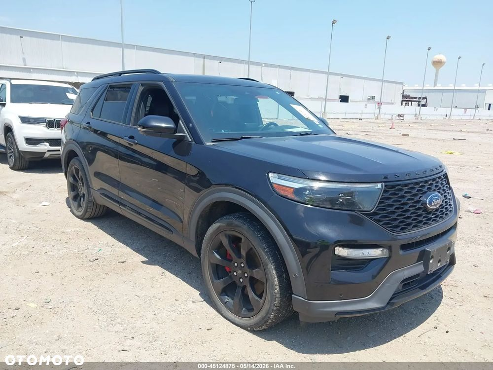
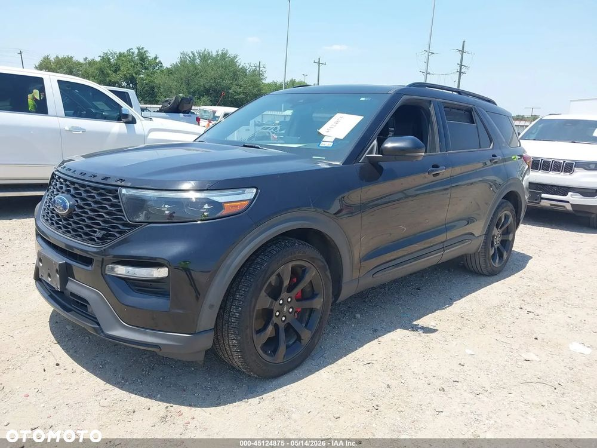
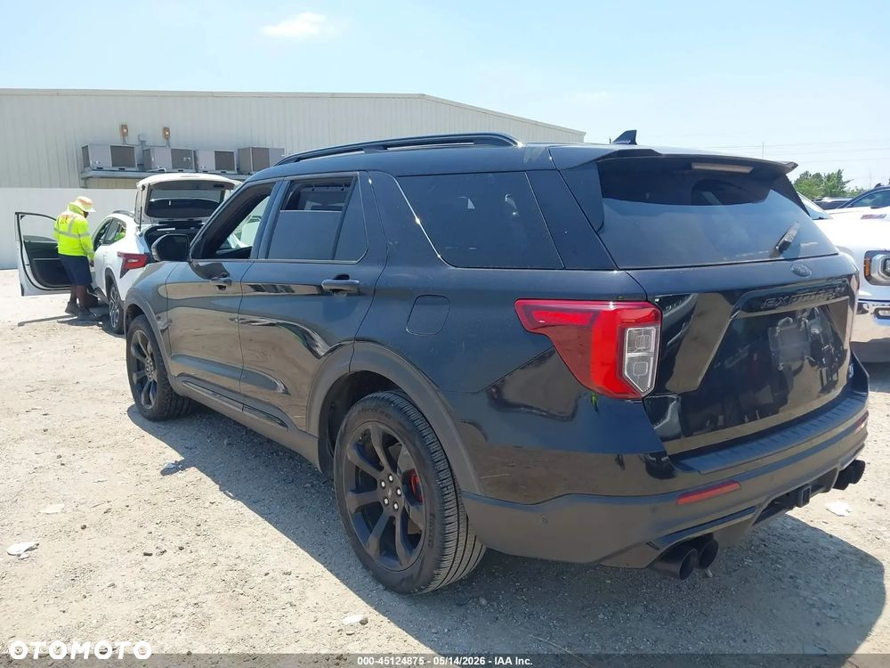
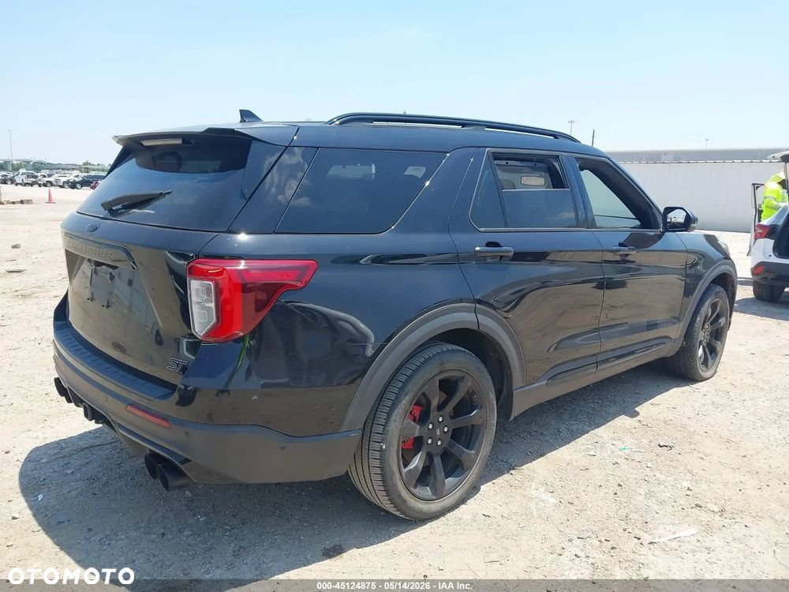
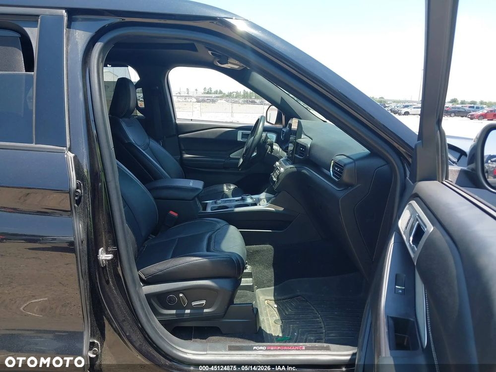
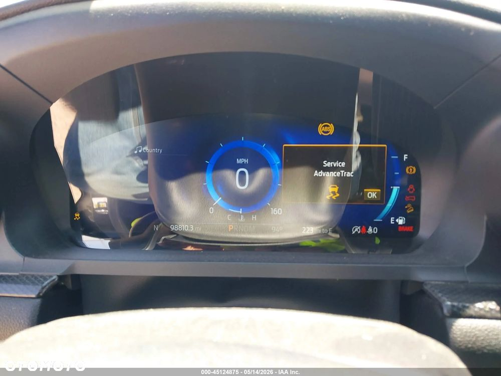
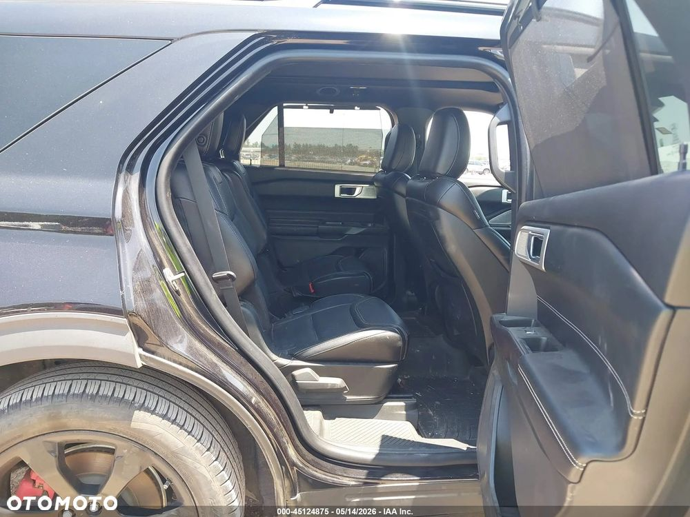
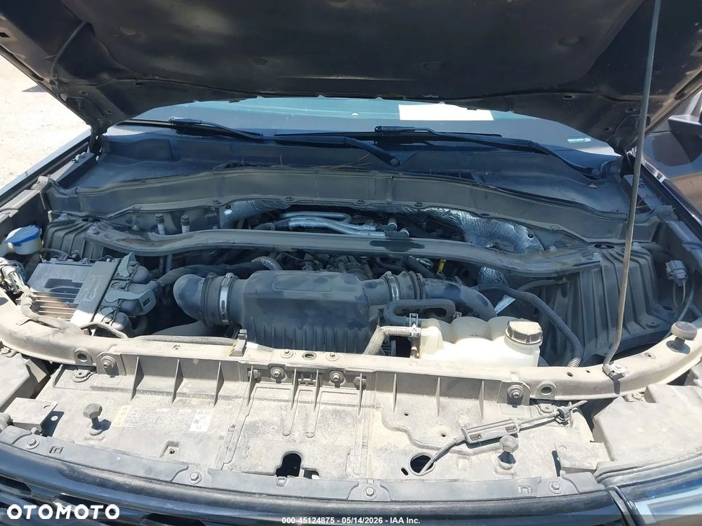
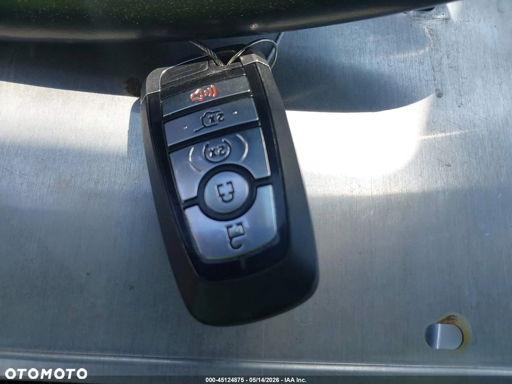
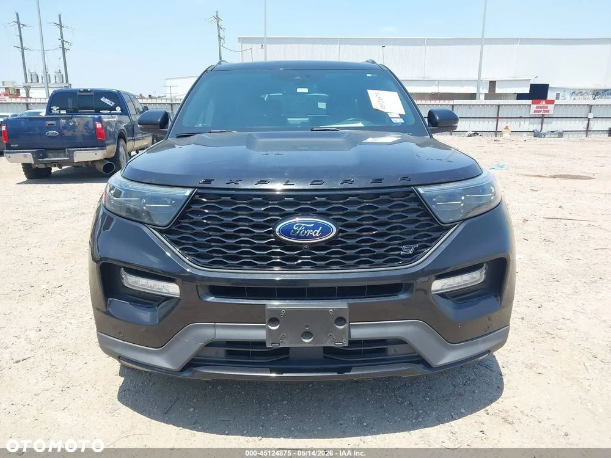
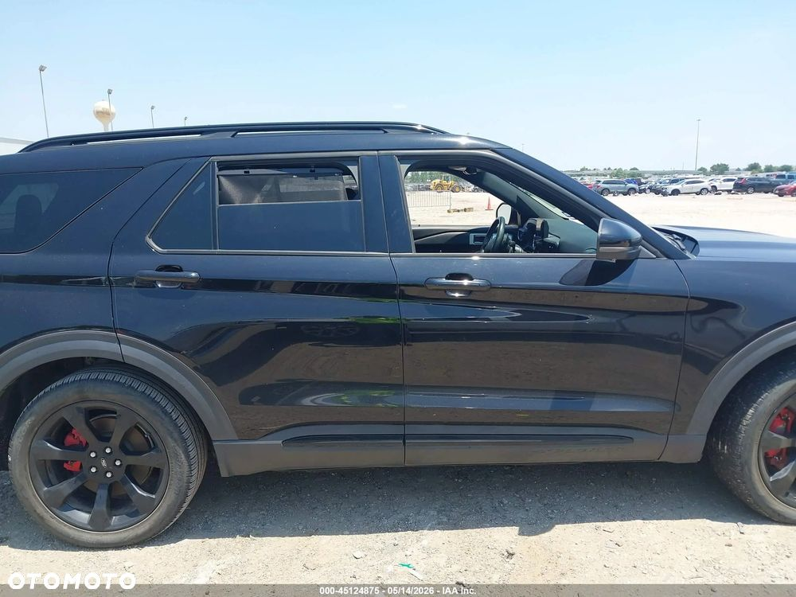
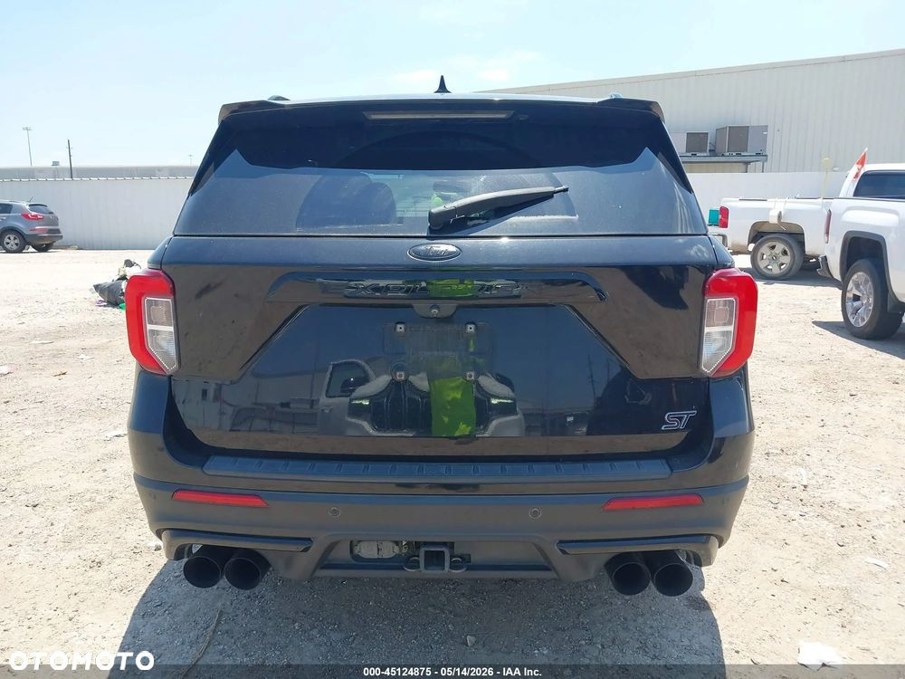
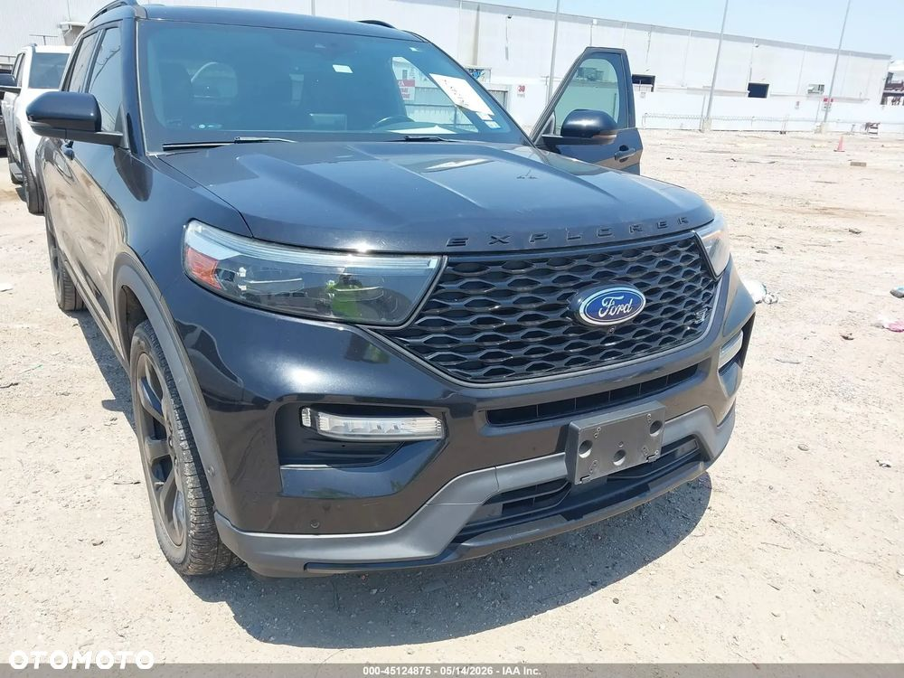
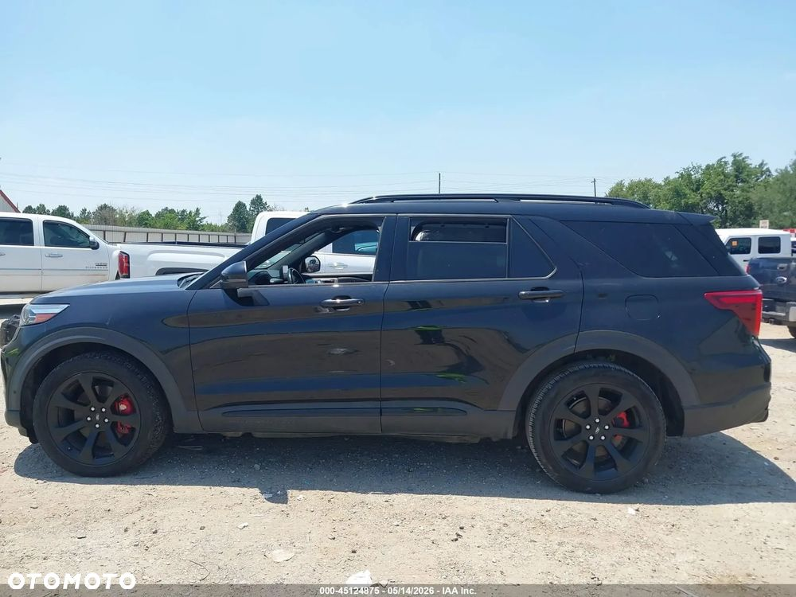